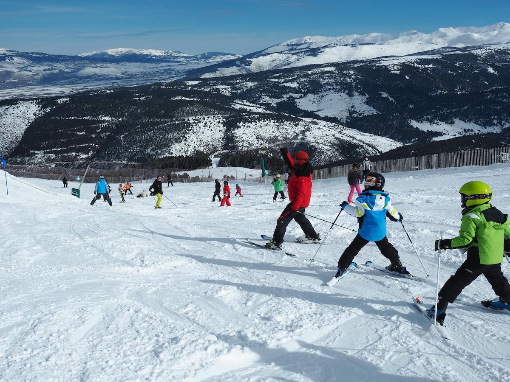
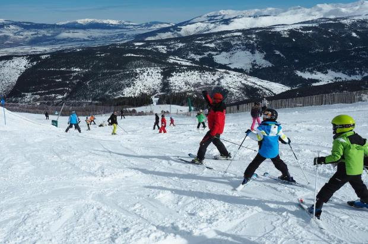
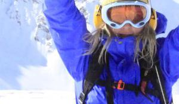
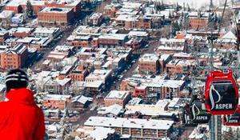
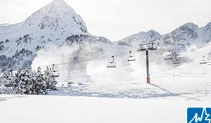
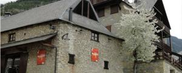
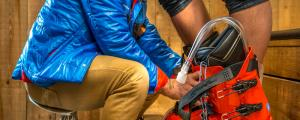

La OMS reconoce que “muy pocos se contagiarán bajando una pista con esquís”

¿Abrir las estaciones de esquí o no abrirlas?Europa se plantea qué hacer con la temporada de esquí en este 2020 y, por ahora, no hay consenso.
Suiza y Austria abogan por abrir sus estaciones porque hay mucho dinero en juego.Francia e Italia defienden el no, que Alemania quiere hacer extensivo a toda Europa.Andorra está todavía dudando y España tres cuartos de lo mismo, aunque hay algunas comunidades que se preparan para abrir sus estaciones cuando lo permitan las restricciones de movilidad, con estrictos protocolos de seguridad.
Pero ¿qué opina la Organización Mundial de la Salud (OMS) sobre la apertura de las estaciones de esquí?Pues la máxima autoridad mundial en salud reconoce que las posibilidades de transmisión del virus bajando una pista de esquí son mínimas.
Sin embargo, una cosa es esquiar y otra cosa ir a esquiar.Porque, al margen del acto meramente deportivo de deslizarse por la nieve con esquís, snowboards o trineos, el 'plan de ir a la nieve' conlleva otras muchas actividades que la OMS sí considera altamente arriesgadas desde el punto de vista sanitario.
'Sospecho que muy pocos se contagiarán bajando una pista con esquís', ha dicho este lunes en Ginebra Michael Ryan, el máximo responsable de emergencias sanitarias de la OMS.
Los verdaderos problemas, según Ryan, se encuentran en otros lugares y actividades relacionadas con el deporte de la nieve: Los aeropuertos, a los que llegan los turistas de nieve; los autobuses que llevan los esquiadores; los hoteles, albergues o pisos de alquiler en las estaciones; las colas para subirse a un remonte; el 'après-ski'; las fiestas y locales de ocio de las estaciones...
La OMS recuerda que algunos de los mayores focos de propagación de la primera ola del virus fueron estaciones de esquí de Francia, Italia y Austria, antes aún de que en marzo se decretara la pandemia.
Por eso, Ryan considera que los gobiernos deberían centrar sus esfuerzos en evitar grandes concentraciones de personas -sobre todo en interiores- más que en prohibir determinadas actividades como el esquí.'La cuestión es que cualquier actividad que implica grandes cantidades de población en movimiento y concentrada en un espacio concreto, como medios de transporte público para ir de un sitio a otro, necesita ser gestionada de una forma muy cuidadosa'.
Posted On: 2020-12-01T10:29:00






Content Date: 2020-12-01
Download Date: 2021-04-08
Document ID: L0C049MJO